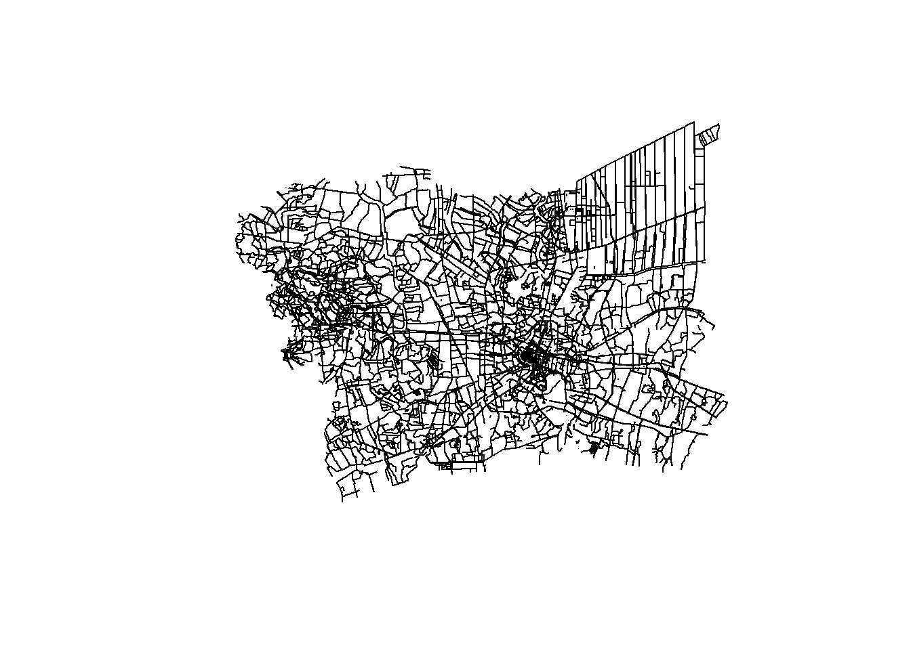

pacman::p_load(sf, sfdep, tidyverse, tmap, Hmisc, lubridate, spNetwork, ggplot2)Take-Home Exercise 01
Geospatial Analytics for Public Good
1. Overview
Road traffic accidents result in significant human and economic costs worldwide, with approximately 1.19 million deaths annually and 20-50 million non-fatal injuries, particularly affecting vulnerable road users. In Thailand, about 20,000 people die each year, making it one of the deadliest countries for road accidents. Accidents frequently occur on national highways, with 66% happening on straight roads and specific high-risk zones like curves, intersections and steep slopes.
2. Getting Started
2.1 Objectives
This analysis aims to discover factors that influence road traffic accidents by examining both behavioural and environmental causes through spatial and spatio-temporal point patterns. This includes:
Visualizing spatio-temporal dynamics of accidents
Conducting spatial analysis using Network Spatial Point Patterns Analysis
Conducting spatio-temporal analysis using Temporal Network Spatial Point Patterns Analysis
2.2 The Study Area
The focus of this study would be the Bangkok Metropolitan Region (BMR).
Note: The projected coordinate system of Thailand is WGS84/UTM zone 47N, and the EPSG code is 32647.
2.3 Analytical Tools
The p_load function of pacman package is used to install and loads the analytical tools that we will be using throughout this exercise.
sf for importing, managing, and processing geospatial data
sfdep for computing spatial weights and autocorrelation statistics
tidyverse for performing data science tasks such as importing, wrangling and visualizing data
tmap for visualizing geospatial objects
Hmisc for summary statistics
lubridate for parsing and manipulating dates
spNetwork for spatial point pattern analysis
ggplot2 for plotting graphs
3. Data
3.1 Getting the Data
Three basic data sets will be used for this analysis:
- Thailand Road Accident [2019-2022] on Kaggle

Link: https://www.kaggle.com/datasets/thaweewatboy/thailand-road-accident-2019-2022
Note: a Kaggle account is required in order to download this dataset.
- Thailand Roads (OpenStreetMap Export) on HDX

Link: https://data.humdata.org/dataset/hotosm_tha_roads
- Thailand - Subnational Administrative Boundaries on HDX

3.2 Storing the Data
At the Take-Home_Ex01 folder, we will create a sub-folder called data. Then, within this sub-folder, we will organize the data sets accordingly:
data/geospatial will store geospatial data
data/aspatial will store aspatial data
data/rds will be used to store the outputs we save so that we can reuse and make our code reproducible
3.3 Importing the Data
3.3.1 Thailand Roads Data
The code chunk below uses st_read() function of sf package to import the hotosm_tha_roads_lines_shp shapefile into R as a simple feature data frame. For this code chunk, we will define the data path and the layer to provide the shapefile name. The output will be saved in rds format for future use.
#|eval: false
thaiRoadsRaw = st_read(dsn = "data/geospatial",
layer = "hotosm_tha_roads_lines_shp")Reading layer `hotosm_tha_roads_lines_shp' from data source
`C:\byebhai8\ISSS626-GeospatialAnalytics\Take-Home_Ex\Take-Home_Ex01\data\geospatial'
using driver `ESRI Shapefile'
Simple feature collection with 2792590 features and 14 fields
Geometry type: MULTILINESTRING
Dimension: XY
Bounding box: xmin: 97.34457 ymin: 5.643645 xmax: 105.6528 ymax: 20.47168
CRS: NAwrite_rds(thaiRoadsRaw, "data/rds/thaiRoadsRaw.rds")The code chunk below will be used to import the saved thaiRoadsRaw.rds into R environment.
thaiRoadsRaw <- read_rds("data/rds/thaiRoadsRaw.rds") %>%
rename(road = name_en)
glimpse(thaiRoadsRaw)Rows: 2,792,590
Columns: 15
$ name <chr> "ถนนฉลองกรุง", "ซอยฉลองกรุง 1/1", NA, NA, "ถนนฉลองกรุง", NA, "…
$ road <chr> "Chalong Krung Road", "Soi Chalong Krung 1/1", NA, NA, "Cha…
$ highway <chr> "secondary", "residential", "secondary_link", "service", "s…
$ surface <chr> "paved", NA, NA, NA, "concrete", NA, NA, "unpaved", NA, NA,…
$ smoothness <chr> NA, NA, NA, NA, NA, NA, NA, NA, NA, NA, NA, NA, NA, NA, NA,…
$ width <chr> NA, NA, NA, NA, NA, NA, NA, NA, NA, NA, NA, NA, NA, NA, NA,…
$ lanes <chr> NA, NA, NA, NA, "2", NA, NA, NA, NA, NA, NA, NA, NA, NA, NA…
$ oneway <chr> "yes", NA, "yes", NA, "yes", NA, NA, NA, NA, NA, NA, NA, NA…
$ bridge <chr> NA, NA, NA, NA, "yes", NA, NA, NA, NA, NA, NA, NA, NA, NA, …
$ layer <chr> NA, NA, NA, NA, "1", NA, NA, NA, NA, NA, NA, NA, NA, NA, NA…
$ source <chr> NA, NA, NA, NA, "Bing", NA, NA, "GPS", NA, NA, NA, NA, NA, …
$ name_th <chr> "ถนนฉลองกรุง", "ซอยฉลองกรุง 1/1", NA, NA, "ถนนฉลองกรุง", NA, "…
$ osm_id <dbl> 1125681229, 594401607, 472283206, 594401608, 116847248, 317…
$ osm_type <chr> "ways_line", "ways_line", "ways_line", "ways_line", "ways_l…
$ geometry <MULTILINESTRING> MULTILINESTRING ((100.7913 ..., MULTILINESTRING…thaiRoadsRaw has a total of 2,792,590 features and 15 fields, with geometry type of multilinestring, and the coordinate system is currently NA.
3.3.2 Thailand - Subnational Administrative Boundaries Data
Likewise, the code chunk below will use the st_read() function of sf package to import the tha_admbndp_admALL_rtsd_itos_20220121 shapefile into R as a simple feature data frame. The output will be saved in rds format for future use.
#|eval: false
admBndpRaw = st_read(dsn = "data/geospatial",
layer = "tha_admbnda_adm1_rtsd_20220121") #tha_admbndp_admALL_rtsd_itos_20220121Reading layer `tha_admbnda_adm1_rtsd_20220121' from data source
`C:\byebhai8\ISSS626-GeospatialAnalytics\Take-Home_Ex\Take-Home_Ex01\data\geospatial'
using driver `ESRI Shapefile'
Simple feature collection with 77 features and 16 fields
Geometry type: MULTIPOLYGON
Dimension: XY
Bounding box: xmin: 97.34336 ymin: 5.613038 xmax: 105.637 ymax: 20.46507
Geodetic CRS: WGS 84write_rds(admBndpRaw, "data/rds/admBndpRaw.rds")The code chunk below will be used to import the saved admBndpRaw.rds into R environment. Note that there are 2 administrative levels in this data set - ADM0 for country, and ADM1 for province. Hence, we will rename ADM1_EN to province.
admBndpRaw <- read_rds("data/rds/admBndpRaw.rds") %>%
rename(province = ADM1_EN)
glimpse(admBndpRaw)Rows: 77
Columns: 17
$ Shape_Leng <dbl> 2.417227, 1.695100, 1.251111, 1.884945, 3.041716, 1.739908,…
$ Shape_Area <dbl> 0.13133873, 0.07926199, 0.05323766, 0.12698345, 0.21393797,…
$ province <chr> "Bangkok", "Samut Prakan", "Nonthaburi", "Pathum Thani", "P…
$ ADM1_TH <chr> "กรุงเทพมหานคร", "สมุทรปราการ", "นนทบุรี", "ปทุมธานี", "พระนครศรีอ…
$ ADM1_PCODE <chr> "TH10", "TH11", "TH12", "TH13", "TH14", "TH15", "TH16", "TH…
$ ADM1_REF <chr> NA, NA, NA, NA, NA, NA, NA, NA, NA, NA, NA, NA, NA, NA, NA,…
$ ADM1ALT1EN <chr> NA, NA, NA, NA, NA, NA, NA, NA, NA, NA, NA, NA, NA, NA, NA,…
$ ADM1ALT2EN <chr> NA, NA, NA, NA, NA, NA, NA, NA, NA, NA, NA, NA, NA, NA, NA,…
$ ADM1ALT1TH <chr> NA, NA, NA, NA, NA, NA, NA, NA, NA, NA, NA, NA, NA, NA, NA,…
$ ADM1ALT2TH <chr> NA, NA, NA, NA, NA, NA, NA, NA, NA, NA, NA, NA, NA, NA, NA,…
$ ADM0_EN <chr> "Thailand", "Thailand", "Thailand", "Thailand", "Thailand",…
$ ADM0_TH <chr> "ประเทศไทย", "ประเทศไทย", "ประเทศไทย", "ประเทศไทย", "ประเทศ…
$ ADM0_PCODE <chr> "TH", "TH", "TH", "TH", "TH", "TH", "TH", "TH", "TH", "TH",…
$ date <date> 2019-02-18, 2019-02-18, 2019-02-18, 2019-02-18, 2019-02-18…
$ validOn <date> 2022-01-22, 2022-01-22, 2022-01-22, 2022-01-22, 2022-01-22…
$ validTo <date> NA, NA, NA, NA, NA, NA, NA, NA, NA, NA, NA, NA, NA, NA, NA…
$ geometry <MULTIPOLYGON [°]> MULTIPOLYGON (((100.6139 13..., MULTIPOLYGON (…admBndpRaw has a total of 77 features and 17 fields, with geometry type of multipolygon, and it is in wgs84 coordinates system.
3.3.3 Thailand Road Accidents Data
Since thai_road_accident_2019_2022.csv data file is in csv file format, we will use the read_csv() of readr package to import this data as shown in the code chunk below. Note that the output will be in a tibble data frame format, and this output will be saved in rds format for future use.
#|eval: false
thaiAccRaw <- read_csv("data/aspatial/thai_road_accident_2019_2022.csv")Rows: 81735 Columns: 18
── Column specification ────────────────────────────────────────────────────────
Delimiter: ","
chr (10): province_th, province_en, agency, route, vehicle_type, presumed_c...
dbl (6): acc_code, number_of_vehicles_involved, number_of_fatalities, numb...
dttm (2): incident_datetime, report_datetime
ℹ Use `spec()` to retrieve the full column specification for this data.
ℹ Specify the column types or set `show_col_types = FALSE` to quiet this message.write_rds(thaiAccRaw, "data/rds/thaiAccRaw.rds")The code chunk below will be used to import the saved thaiAccRaw.rds into R environment.
thaiAccRaw <- read_rds("data/rds/thaiAccRaw.rds") %>%
rename(province = province_en)
list(thaiAccRaw)[[1]]
# A tibble: 81,735 × 18
acc_code incident_datetime report_datetime province_th province agency
<dbl> <dttm> <dttm> <chr> <chr> <chr>
1 571905 2019-01-01 00:00:00 2019-01-02 06:11:00 ลพบุรี Loburi depar…
2 3790870 2019-01-01 00:03:00 2020-02-20 13:48:00 อุบลราชธานี Ubon Rat… depar…
3 599075 2019-01-01 00:05:00 2019-01-01 10:35:00 ประจวบคีรีขันธ์ Prachuap… depar…
4 571924 2019-01-01 00:20:00 2019-01-02 05:12:00 เชียงใหม่ Chiang M… depar…
5 599523 2019-01-01 00:25:00 2019-01-04 09:42:00 นครสวรรค์ Nakhon S… depar…
6 571982 2019-01-01 00:30:00 2019-01-07 12:46:00 แม่ฮ่องสอน Mae Hong… depar…
7 612782 2019-01-01 00:30:00 2019-10-25 14:25:00 ชุมพร Chumphon depar…
8 599235 2019-01-01 00:35:00 2019-01-02 16:23:00 สิงห์บุรี Sing Buri depar…
9 600643 2019-01-01 00:40:00 2019-01-11 10:01:00 สงขลา Songkhla depar…
10 599105 2019-01-01 00:45:00 2019-01-01 10:11:00 ตราด Trat depar…
# ℹ 81,725 more rows
# ℹ 12 more variables: route <chr>, vehicle_type <chr>, presumed_cause <chr>,
# accident_type <chr>, number_of_vehicles_involved <dbl>,
# number_of_fatalities <dbl>, number_of_injuries <dbl>,
# weather_condition <chr>, latitude <dbl>, longitude <dbl>,
# road_description <chr>, slope_description <chr>thaiAccRaw has a total of 81,735 features and 18 fields, including the latitude and longitude fields.
4. Data Wrangling
4.1 Aspatial Data Wrangling
4.1.1 Removing Columns
It is likely that not all 18 columns are required/useful for our analysis, especially when some of the columns contain values that are not in English (province_th & route). On top of this, there are 2 date columns in the data set - incident_datetime which represents when the accident occurred, and report_datetime which represent when the accident was reported. For the accuracy of our analysis, we only want to focus on when the accident occurred. Hence, we will remove this column as well.
We will use the select() function from dplyr package to select the variables by index, and exclude the indexes of the columns that we want to remove.
thaiAccRaw <- thaiAccRaw %>%
dplyr::select(1:2, 5:6, 8:18)
list(thaiAccRaw)[[1]]
# A tibble: 81,735 × 15
acc_code incident_datetime province agency vehicle_type presumed_cause
<dbl> <dttm> <chr> <chr> <chr> <chr>
1 571905 2019-01-01 00:00:00 Loburi depar… motorcycle driving under…
2 3790870 2019-01-01 00:03:00 Ubon Ratchat… depar… private/pas… speeding
3 599075 2019-01-01 00:05:00 Prachuap Khi… depar… motorcycle speeding
4 571924 2019-01-01 00:20:00 Chiang Mai depar… motorcycle driving under…
5 599523 2019-01-01 00:25:00 Nakhon Sawan depar… private/pas… cutting in cl…
6 571982 2019-01-01 00:30:00 Mae Hong Son depar… motorcycle speeding
7 612782 2019-01-01 00:30:00 Chumphon depar… 4-wheel pic… failure to yi…
8 599235 2019-01-01 00:35:00 Sing Buri depar… motorcycle speeding
9 600643 2019-01-01 00:40:00 Songkhla depar… motorcycle speeding
10 599105 2019-01-01 00:45:00 Trat depar… motorcycle speeding
# ℹ 81,725 more rows
# ℹ 9 more variables: accident_type <chr>, number_of_vehicles_involved <dbl>,
# number_of_fatalities <dbl>, number_of_injuries <dbl>,
# weather_condition <chr>, latitude <dbl>, longitude <dbl>,
# road_description <chr>, slope_description <chr>The output confirms that we have dropped 3 columns.
4.1.2 Adding Columns
We also want to add new columns which could potentially help with our analysis later on, namely Season, Day of Week and Time of Day. Reference was taken from the following link to determine the Seasons for BMR.
thaiAccRaw <- thaiAccRaw %>%
mutate(
dayofweek = wday(incident_datetime, label = TRUE, abbr = TRUE),
month = month(incident_datetime, label = TRUE, abbr = TRUE),
season = case_when(
month(incident_datetime) %in% c(1:2, 11:12) ~ "Winter",
month(incident_datetime) %in% 3:6 ~ "Summer",
month(incident_datetime) %in% 7:10 ~ "Rainy"))
list(thaiAccRaw)[[1]]
# A tibble: 81,735 × 18
acc_code incident_datetime province agency vehicle_type presumed_cause
<dbl> <dttm> <chr> <chr> <chr> <chr>
1 571905 2019-01-01 00:00:00 Loburi depar… motorcycle driving under…
2 3790870 2019-01-01 00:03:00 Ubon Ratchat… depar… private/pas… speeding
3 599075 2019-01-01 00:05:00 Prachuap Khi… depar… motorcycle speeding
4 571924 2019-01-01 00:20:00 Chiang Mai depar… motorcycle driving under…
5 599523 2019-01-01 00:25:00 Nakhon Sawan depar… private/pas… cutting in cl…
6 571982 2019-01-01 00:30:00 Mae Hong Son depar… motorcycle speeding
7 612782 2019-01-01 00:30:00 Chumphon depar… 4-wheel pic… failure to yi…
8 599235 2019-01-01 00:35:00 Sing Buri depar… motorcycle speeding
9 600643 2019-01-01 00:40:00 Songkhla depar… motorcycle speeding
10 599105 2019-01-01 00:45:00 Trat depar… motorcycle speeding
# ℹ 81,725 more rows
# ℹ 12 more variables: accident_type <chr>, number_of_vehicles_involved <dbl>,
# number_of_fatalities <dbl>, number_of_injuries <dbl>,
# weather_condition <chr>, latitude <dbl>, longitude <dbl>,
# road_description <chr>, slope_description <chr>, dayofweek <ord>,
# month <ord>, season <chr>The output confirms that we have added 3 new columns.
4.1.3 Filter by Province
Note that thaiAccRaw has a total of 81,735 rows. We want to only focus on the study area (BMR) in our analysis. Hence, we will filter the province field to focus on the 6 provinces which are in the BMR: Bangkok, Nakhon Pathom, Pathum Thani, Nonthaburi, Samut Prakan and Samut Sakhon.
We will store these province names in a list and use it in our filter condition.
bmr <- c("Nakhon Pathom", "Pathum Thani", "Nonthaburi", "Samut Prakan", "Samut Sakhon", "Bangkok")
thaiAccRaw <- thaiAccRaw %>%
filter(province %in% bmr)
list(thaiAccRaw)[[1]]
# A tibble: 13,336 × 18
acc_code incident_datetime province agency vehicle_type presumed_cause
<dbl> <dttm> <chr> <chr> <chr> <chr>
1 571882 2019-01-01 02:25:00 Nakhon Pathom depar… motorcycle speeding
2 600001 2019-01-01 03:00:00 Nonthaburi depar… private/pas… speeding
3 605043 2019-01-01 03:00:00 Samut Prakan depar… private/pas… running red l…
4 629691 2019-01-01 03:05:00 Bangkok expre… other other
5 571887 2019-01-01 04:30:00 Nakhon Pathom depar… motorcycle speeding
6 599234 2019-01-01 04:45:00 Samut Prakan depar… motorcycle driving under…
7 599990 2019-01-01 05:30:00 Samut Sakhon depar… motorcycle speeding
8 612045 2019-01-01 05:30:00 Nonthaburi depar… private/pas… cutting in cl…
9 629689 2019-01-01 05:42:00 Bangkok expre… other other
10 607046 2019-01-01 06:30:00 Pathum Thani depar… private/pas… speeding
# ℹ 13,326 more rows
# ℹ 12 more variables: accident_type <chr>, number_of_vehicles_involved <dbl>,
# number_of_fatalities <dbl>, number_of_injuries <dbl>,
# weather_condition <chr>, latitude <dbl>, longitude <dbl>,
# road_description <chr>, slope_description <chr>, dayofweek <ord>,
# month <ord>, season <chr>Note that after the filter is applied, thaiAccRaw has been reduced to having only 13,336 rows.
4.1.4 Handling Missing Values
Moving forward, we will be utilizing two useful columns - latitude and longitude. Note that they are in decimal degree format.
The filter() function of dplyr package can be used to verify if these key columns have any missing values.
thaiAccRaw %>%
filter(is.na(longitude) | longitude == "",
is.na(latitude) | latitude == "")# A tibble: 350 × 18
acc_code incident_datetime province agency vehicle_type presumed_cause
<dbl> <dttm> <chr> <chr> <chr> <chr>
1 5099638 2021-01-01 21:33:00 Bangkok expressway… other other
2 5099647 2021-01-10 14:26:00 Bangkok expressway… other other
3 3014701 2021-01-14 22:15:00 Bangkok expressway… other other
4 5099676 2021-01-26 02:00:00 Bangkok expressway… other other
5 5099678 2021-01-26 13:50:00 Bangkok expressway… other other
6 5099677 2021-01-26 17:39:00 Bangkok expressway… other other
7 5099691 2021-02-02 11:07:00 Bangkok expressway… other other
8 5099698 2021-02-03 21:47:00 Bangkok expressway… other other
9 5099703 2021-02-05 09:32:00 Bangkok expressway… other other
10 5099716 2021-02-09 13:04:00 Bangkok expressway… other other
# ℹ 340 more rows
# ℹ 12 more variables: accident_type <chr>, number_of_vehicles_involved <dbl>,
# number_of_fatalities <dbl>, number_of_injuries <dbl>,
# weather_condition <chr>, latitude <dbl>, longitude <dbl>,
# road_description <chr>, slope_description <chr>, dayofweek <ord>,
# month <ord>, season <chr>The output proves that there are 350 rows which contain missing values for the latitude and longitude columns. To handle this issue, we will re-use the filter() function to exclude these missing values from our tibble data frame.
thaiAccRaw <- thaiAccRaw %>%
filter(!is.na(longitude) | longitude != "",
!is.na(latitude) | latitude != "")Let us verify if the rows with missing values have been dropped by re-running our initial code chunk.
thaiAccRaw %>%
filter(is.na(longitude) | longitude == "",
is.na(latitude) | latitude == "")# A tibble: 0 × 18
# ℹ 18 variables: acc_code <dbl>, incident_datetime <dttm>, province <chr>,
# agency <chr>, vehicle_type <chr>, presumed_cause <chr>,
# accident_type <chr>, number_of_vehicles_involved <dbl>,
# number_of_fatalities <dbl>, number_of_injuries <dbl>,
# weather_condition <chr>, latitude <dbl>, longitude <dbl>,
# road_description <chr>, slope_description <chr>, dayofweek <ord>,
# month <ord>, season <chr>The message above confirms that the rows with missing values have been excluded from thaiAccRaw.
4.1.5 Handling Duplicates
We also want to avoid the repetition of records, which could lead to incorrect analysis of accidents in thaiAccRaw. Hence, we will check for duplicates using group_by_all() to ensure the integrity of our data.
duplicates <- thaiAccRaw %>%
group_by_all() %>%
filter(n()>1) %>%
ungroup()
duplicates# A tibble: 0 × 18
# ℹ 18 variables: acc_code <dbl>, incident_datetime <dttm>, province <chr>,
# agency <chr>, vehicle_type <chr>, presumed_cause <chr>,
# accident_type <chr>, number_of_vehicles_involved <dbl>,
# number_of_fatalities <dbl>, number_of_injuries <dbl>,
# weather_condition <chr>, latitude <dbl>, longitude <dbl>,
# road_description <chr>, slope_description <chr>, dayofweek <ord>,
# month <ord>, season <chr>The message above confirms that there are no duplicated records in thaiAccRaw, which is great!
4.1.6 Creating Simple Feature Data Frame
Next, the code chunk below helps to convert thaiAccRaw into a simple feature data frame by using st_as_sf() of sf packages.
As mentioned previously, the projected coordinate system of Thailand is WGS84/UTM zone 47N, and the EPSG code is 32647. Hence, we will set the following arguments accordingly: - coords argument to specify the column names to use for x- and y-coordinates - crs argument to specify the coordinates system in epsg format, EPSG:4326 for wgs84 and EPSG:32647 for Thailand’s projected coordinate system
The output will be saved in rds format for future use.
#|eval: false
thaiAccSF <- st_as_sf(thaiAccRaw,
coords = c("longitude", "latitude"),
crs=4326) %>%
st_transform(crs = 32647)
write_rds(thaiAccSF, "data/rds/thaiAccSF.rds")The code chunk below will be used to import the saved thaiAccSF.rds into R environment.
thaiAccSF <- read_rds("data/rds/thaiAccSF.rds")
glimpse(thaiAccSF)Rows: 12,986
Columns: 17
$ acc_code <dbl> 571882, 600001, 605043, 629691, 571887, 59…
$ incident_datetime <dttm> 2019-01-01 02:25:00, 2019-01-01 03:00:00,…
$ province <chr> "Nakhon Pathom", "Nonthaburi", "Samut Prak…
$ agency <chr> "department of rural roads", "department o…
$ vehicle_type <chr> "motorcycle", "private/passenger car", "pr…
$ presumed_cause <chr> "speeding", "speeding", "running red light…
$ accident_type <chr> "rollover/fallen on straight road", "rollo…
$ number_of_vehicles_involved <dbl> 1, 1, 2, 1, 1, 1, 1, 1, 1, 1, 2, 2, 3, 2, …
$ number_of_fatalities <dbl> 0, 0, 0, 0, 0, 1, 1, 0, 0, 0, 0, 0, 0, 0, …
$ number_of_injuries <dbl> 2, 1, 0, 1, 1, 0, 0, 0, 0, 1, 0, 0, 0, 1, …
$ weather_condition <chr> "clear", "clear", "clear", "clear", "clear…
$ road_description <chr> "straight road", "straight road", "other",…
$ slope_description <chr> "no slope", "no slope", "other", "other", …
$ dayofweek <ord> Tue, Tue, Tue, Tue, Tue, Tue, Tue, Tue, Tu…
$ month <ord> Jan, Jan, Jan, Jan, Jan, Jan, Jan, Jan, Ja…
$ season <chr> "Winter", "Winter", "Winter", "Winter", "W…
$ geometry <POINT [m]> POINT (627012.3 1533381), POINT (655…Note that a new column called geometry has been added into the data frame. Also, the columns longitude and latitude have been dropped from the data frame.
4.2 Geospatial Data Wrangling
4.2.1 Removing Columns
For thaiRoadsRaw data frame, we will be removing columns which do not contain values in English. We will also be removing columns which might not be helpful for our analysis - source, osm_id & osm_type.
thaiRoadsRaw <- thaiRoadsRaw %>%
dplyr::select(2:10, 15)
glimpse(thaiRoadsRaw)Rows: 2,792,590
Columns: 10
$ road <chr> "Chalong Krung Road", "Soi Chalong Krung 1/1", NA, NA, "Cha…
$ highway <chr> "secondary", "residential", "secondary_link", "service", "s…
$ surface <chr> "paved", NA, NA, NA, "concrete", NA, NA, "unpaved", NA, NA,…
$ smoothness <chr> NA, NA, NA, NA, NA, NA, NA, NA, NA, NA, NA, NA, NA, NA, NA,…
$ width <chr> NA, NA, NA, NA, NA, NA, NA, NA, NA, NA, NA, NA, NA, NA, NA,…
$ lanes <chr> NA, NA, NA, NA, "2", NA, NA, NA, NA, NA, NA, NA, NA, NA, NA…
$ oneway <chr> "yes", NA, "yes", NA, "yes", NA, NA, NA, NA, NA, NA, NA, NA…
$ bridge <chr> NA, NA, NA, NA, "yes", NA, NA, NA, NA, NA, NA, NA, NA, NA, …
$ layer <chr> NA, NA, NA, NA, "1", NA, NA, NA, NA, NA, NA, NA, NA, NA, NA…
$ geometry <MULTILINESTRING> MULTILINESTRING ((100.7913 ..., MULTILINESTRING…thaiRoadsRaw now only consists of 10 columns, reduced from the original 15 columns.
Likewise, for the admBndpRaw data frame, we will be removing columns which do not contain values in English. We will also be removing columns which might not be helpful for our analysis, keeping only the key variables (province, which is ADM1_EN & geometry) we want to use for our analysis.
admBndpRaw <- admBndpRaw %>%
dplyr::select(1:3, 17)
glimpse(admBndpRaw)Rows: 77
Columns: 4
$ Shape_Leng <dbl> 2.417227, 1.695100, 1.251111, 1.884945, 3.041716, 1.739908,…
$ Shape_Area <dbl> 0.13133873, 0.07926199, 0.05323766, 0.12698345, 0.21393797,…
$ province <chr> "Bangkok", "Samut Prakan", "Nonthaburi", "Pathum Thani", "P…
$ geometry <MULTIPOLYGON [°]> MULTIPOLYGON (((100.6139 13..., MULTIPOLYGON (…admBndpRaw now only consists of 4 columns, reduced from the original 17 columns.
4.2.2 Filter by Province
We want to only focus on the study area (BMR) in our analysis. Hence, we will filter the province field to focus on the 6 provinces which are in the BMR: Bangkok, Nakhon Pathom, Pathum Thani, Nonthaburi, Samut Prakan and Samut Sakhon.
We will store these province names in a list and use it in our filter condition.
bmr <- c("Nakhon Pathom", "Pathum Thani", "Nonthaburi", "Samut Prakan", "Samut Sakhon", "Bangkok")
admBndpRaw <- admBndpRaw %>%
filter(province %in% bmr)
glimpse(admBndpRaw)Rows: 6
Columns: 4
$ Shape_Leng <dbl> 2.417227, 1.695100, 1.251111, 1.884945, 2.463030, 1.566369
$ Shape_Area <dbl> 0.13133873, 0.07926199, 0.05323766, 0.12698345, 0.17891420,…
$ province <chr> "Bangkok", "Samut Prakan", "Nonthaburi", "Pathum Thani", "N…
$ geometry <MULTIPOLYGON [°]> MULTIPOLYGON (((100.6139 13..., MULTIPOLYGON (((100.7306 13…Note that after the filter is applied, admBndpRaw has been reduced to having only 6 rows, compared to the original 77 rows. Each of these 6 rows now represent each of the province in Bangkok Metropolitan Region.
tmap_mode("plot")tmap mode set to plottingqtm(admBndpRaw, fill = "province") +
tm_legend(main.title = "Bangkok Metropolitan Region", legend.position = c("left", "top"), legend.outside = TRUE)4.2.3 Filter by Highway
Taking reference from the below link, we will filter the highway field of thaiRoadsRaw to focus on the 5 key highway variables: motorway, primary, secondary, tertiary and unclassified.
Link: https://wiki.openstreetmap.org/wiki/WikiProject_Thailand#Highway_classification
We will store these highway values in a list and use it in our filter condition.
highways <- c("motorway", "primary", "secondary", "tertiary", "unclassified")
thaiRoadsRaw <- thaiRoadsRaw %>%
filter(highway %in% highways)
glimpse(thaiRoadsRaw)Rows: 188,596
Columns: 10
$ road <chr> "Chalong Krung Road", "Chalong Krung Road", "Erawan 1 Road"…
$ highway <chr> "secondary", "secondary", "tertiary", "tertiary", "unclassi…
$ surface <chr> "paved", "concrete", NA, NA, "gravel", "gravel", "gravel", …
$ smoothness <chr> NA, NA, NA, NA, NA, NA, NA, NA, NA, NA, NA, NA, NA, NA, NA,…
$ width <chr> NA, NA, NA, NA, NA, NA, "4", NA, NA, NA, NA, NA, NA, NA, NA…
$ lanes <chr> NA, "2", NA, NA, "1", "1", "1", "3", NA, NA, NA, NA, NA, "1…
$ oneway <chr> "yes", "yes", NA, NA, NA, NA, NA, "yes", "yes", "yes", NA, …
$ bridge <chr> NA, "yes", NA, NA, NA, NA, NA, NA, NA, NA, NA, NA, NA, "yes…
$ layer <chr> NA, "1", NA, NA, NA, NA, NA, NA, NA, NA, NA, NA, NA, "1", N…
$ geometry <MULTILINESTRING> MULTILINESTRING ((100.7913 ..., MULTILINESTRING…Note that after the filter is applied, thaiRoadsRaw has been reduced to having only 188,596 rows, compared to the original 2,792,590 rows.
4.2.4 Handling Multilinestring
For our spatio-temporal analysis, we require the geometry field in thaiRoadsRaw to be of LINESTRING instead of MULTILINESTRING.
To do this, we will utilize the st_cast() function from sf package to convert geometry field from MULTILINESTRING to LINESTRING.
thaiRoadsRaw$geometry <- st_cast(thaiRoadsRaw$geometry, "LINESTRING")
glimpse(thaiRoadsRaw)Rows: 188,596
Columns: 10
$ road <chr> "Chalong Krung Road", "Chalong Krung Road", "Erawan 1 Road"…
$ highway <chr> "secondary", "secondary", "tertiary", "tertiary", "unclassi…
$ surface <chr> "paved", "concrete", NA, NA, "gravel", "gravel", "gravel", …
$ smoothness <chr> NA, NA, NA, NA, NA, NA, NA, NA, NA, NA, NA, NA, NA, NA, NA,…
$ width <chr> NA, NA, NA, NA, NA, NA, "4", NA, NA, NA, NA, NA, NA, NA, NA…
$ lanes <chr> NA, "2", NA, NA, "1", "1", "1", "3", NA, NA, NA, NA, NA, "1…
$ oneway <chr> "yes", "yes", NA, NA, NA, NA, NA, "yes", "yes", "yes", NA, …
$ bridge <chr> NA, "yes", NA, NA, NA, NA, NA, NA, NA, NA, NA, NA, NA, "yes…
$ layer <chr> NA, "1", NA, NA, NA, NA, NA, NA, NA, NA, NA, NA, NA, "1", N…
$ geometry <LINESTRING> LINESTRING (100.7913 13.740..., LINESTRING (100.7831…Note that the geometry field in thaiRoadsRaw has been updated to LINESTRING now.
4.2.5 Coordinate Systems
As mentioned previously, the projected coordinate system of Thailand is WGS84/UTM zone 47N, and the EPSG code is 32647.
We can use st_crs() of sf package to identify the coordinate system of thaiRoadsRaw.
st_crs(thaiRoadsRaw)Coordinate Reference System: NAThe message above shows that there is no assignment of coordinate system for thaiRoadsRaw simple feature data frame. Hence, we will use the below code chunk to assign the CRS first before transforming the CRS to EPSG 32647.
The output will be saved in rds format for future use.
#|eval: false
thaiRoadsRaw <- st_set_crs(thaiRoadsRaw, 4326)
thaiRoadsSF <- st_transform(thaiRoadsRaw, crs = 32647)
write_rds(thaiRoadsSF, "data/rds/thaiRoadsSF.rds")The code chunk below will be used to import the saved thaiRoadsSF.rds into R environment. Let us display the content of thaiRoadsSF to verify the updated CRS info.
thaiRoadsSF <- read_rds("data/rds/thaiRoadsSF.rds")
st_crs(thaiRoadsSF)Coordinate Reference System:
User input: EPSG:32647
wkt:
PROJCRS["WGS 84 / UTM zone 47N",
BASEGEOGCRS["WGS 84",
ENSEMBLE["World Geodetic System 1984 ensemble",
MEMBER["World Geodetic System 1984 (Transit)"],
MEMBER["World Geodetic System 1984 (G730)"],
MEMBER["World Geodetic System 1984 (G873)"],
MEMBER["World Geodetic System 1984 (G1150)"],
MEMBER["World Geodetic System 1984 (G1674)"],
MEMBER["World Geodetic System 1984 (G1762)"],
MEMBER["World Geodetic System 1984 (G2139)"],
ELLIPSOID["WGS 84",6378137,298.257223563,
LENGTHUNIT["metre",1]],
ENSEMBLEACCURACY[2.0]],
PRIMEM["Greenwich",0,
ANGLEUNIT["degree",0.0174532925199433]],
ID["EPSG",4326]],
CONVERSION["UTM zone 47N",
METHOD["Transverse Mercator",
ID["EPSG",9807]],
PARAMETER["Latitude of natural origin",0,
ANGLEUNIT["degree",0.0174532925199433],
ID["EPSG",8801]],
PARAMETER["Longitude of natural origin",99,
ANGLEUNIT["degree",0.0174532925199433],
ID["EPSG",8802]],
PARAMETER["Scale factor at natural origin",0.9996,
SCALEUNIT["unity",1],
ID["EPSG",8805]],
PARAMETER["False easting",500000,
LENGTHUNIT["metre",1],
ID["EPSG",8806]],
PARAMETER["False northing",0,
LENGTHUNIT["metre",1],
ID["EPSG",8807]]],
CS[Cartesian,2],
AXIS["(E)",east,
ORDER[1],
LENGTHUNIT["metre",1]],
AXIS["(N)",north,
ORDER[2],
LENGTHUNIT["metre",1]],
USAGE[
SCOPE["Engineering survey, topographic mapping."],
AREA["Between 96°E and 102°E, northern hemisphere between equator and 84°N, onshore and offshore. China. Indonesia. Laos. Malaysia - West Malaysia. Mongolia. Myanmar (Burma). Russian Federation. Thailand."],
BBOX[0,96,84,102]],
ID["EPSG",32647]]Likewise, we can use st_crs() of sf package to identify the coordinate system of admBndpRaw.
st_crs(admBndpRaw)Coordinate Reference System:
User input: WGS 84
wkt:
GEOGCRS["WGS 84",
DATUM["World Geodetic System 1984",
ELLIPSOID["WGS 84",6378137,298.257223563,
LENGTHUNIT["metre",1]]],
PRIMEM["Greenwich",0,
ANGLEUNIT["degree",0.0174532925199433]],
CS[ellipsoidal,2],
AXIS["latitude",north,
ORDER[1],
ANGLEUNIT["degree",0.0174532925199433]],
AXIS["longitude",east,
ORDER[2],
ANGLEUNIT["degree",0.0174532925199433]],
ID["EPSG",4326]]As the admBndpRaw simple feature data frame is in wgs84 coordinate system, we will perform projection transformation using the code chunk below.
The output will be saved in rds format for future use.
#|eval: false
admBndpRaw <- st_set_crs(admBndpRaw, 4326)
admBndpSF <- st_transform(admBndpRaw, crs = 32647)
write_rds(admBndpSF, "data/rds/admBndpSF.rds")The code chunk below will be used to import the saved admBndpSF.rds into R environment. Let us display the content of admBndpSF to verify the updated CRS info.
admBndpSF <- read_rds("data/rds/admBndpSF.rds")
st_crs(admBndpSF)Coordinate Reference System:
User input: EPSG:32647
wkt:
PROJCRS["WGS 84 / UTM zone 47N",
BASEGEOGCRS["WGS 84",
ENSEMBLE["World Geodetic System 1984 ensemble",
MEMBER["World Geodetic System 1984 (Transit)"],
MEMBER["World Geodetic System 1984 (G730)"],
MEMBER["World Geodetic System 1984 (G873)"],
MEMBER["World Geodetic System 1984 (G1150)"],
MEMBER["World Geodetic System 1984 (G1674)"],
MEMBER["World Geodetic System 1984 (G1762)"],
MEMBER["World Geodetic System 1984 (G2139)"],
ELLIPSOID["WGS 84",6378137,298.257223563,
LENGTHUNIT["metre",1]],
ENSEMBLEACCURACY[2.0]],
PRIMEM["Greenwich",0,
ANGLEUNIT["degree",0.0174532925199433]],
ID["EPSG",4326]],
CONVERSION["UTM zone 47N",
METHOD["Transverse Mercator",
ID["EPSG",9807]],
PARAMETER["Latitude of natural origin",0,
ANGLEUNIT["degree",0.0174532925199433],
ID["EPSG",8801]],
PARAMETER["Longitude of natural origin",99,
ANGLEUNIT["degree",0.0174532925199433],
ID["EPSG",8802]],
PARAMETER["Scale factor at natural origin",0.9996,
SCALEUNIT["unity",1],
ID["EPSG",8805]],
PARAMETER["False easting",500000,
LENGTHUNIT["metre",1],
ID["EPSG",8806]],
PARAMETER["False northing",0,
LENGTHUNIT["metre",1],
ID["EPSG",8807]]],
CS[Cartesian,2],
AXIS["(E)",east,
ORDER[1],
LENGTHUNIT["metre",1]],
AXIS["(N)",north,
ORDER[2],
LENGTHUNIT["metre",1]],
USAGE[
SCOPE["Engineering survey, topographic mapping."],
AREA["Between 96°E and 102°E, northern hemisphere between equator and 84°N, onshore and offshore. China. Indonesia. Laos. Malaysia - West Malaysia. Mongolia. Myanmar (Burma). Russian Federation. Thailand."],
BBOX[0,96,84,102]],
ID["EPSG",32647]]Lastly, we can use st_crs() of sf package to identify the coordinate system of thaiAccSF.
st_crs(thaiAccSF)Coordinate Reference System:
User input: EPSG:32647
wkt:
PROJCRS["WGS 84 / UTM zone 47N",
BASEGEOGCRS["WGS 84",
ENSEMBLE["World Geodetic System 1984 ensemble",
MEMBER["World Geodetic System 1984 (Transit)"],
MEMBER["World Geodetic System 1984 (G730)"],
MEMBER["World Geodetic System 1984 (G873)"],
MEMBER["World Geodetic System 1984 (G1150)"],
MEMBER["World Geodetic System 1984 (G1674)"],
MEMBER["World Geodetic System 1984 (G1762)"],
MEMBER["World Geodetic System 1984 (G2139)"],
ELLIPSOID["WGS 84",6378137,298.257223563,
LENGTHUNIT["metre",1]],
ENSEMBLEACCURACY[2.0]],
PRIMEM["Greenwich",0,
ANGLEUNIT["degree",0.0174532925199433]],
ID["EPSG",4326]],
CONVERSION["UTM zone 47N",
METHOD["Transverse Mercator",
ID["EPSG",9807]],
PARAMETER["Latitude of natural origin",0,
ANGLEUNIT["degree",0.0174532925199433],
ID["EPSG",8801]],
PARAMETER["Longitude of natural origin",99,
ANGLEUNIT["degree",0.0174532925199433],
ID["EPSG",8802]],
PARAMETER["Scale factor at natural origin",0.9996,
SCALEUNIT["unity",1],
ID["EPSG",8805]],
PARAMETER["False easting",500000,
LENGTHUNIT["metre",1],
ID["EPSG",8806]],
PARAMETER["False northing",0,
LENGTHUNIT["metre",1],
ID["EPSG",8807]]],
CS[Cartesian,2],
AXIS["(E)",east,
ORDER[1],
LENGTHUNIT["metre",1]],
AXIS["(N)",north,
ORDER[2],
LENGTHUNIT["metre",1]],
USAGE[
SCOPE["Engineering survey, topographic mapping."],
AREA["Between 96°E and 102°E, northern hemisphere between equator and 84°N, onshore and offshore. China. Indonesia. Laos. Malaysia - West Malaysia. Mongolia. Myanmar (Burma). Russian Federation. Thailand."],
BBOX[0,96,84,102]],
ID["EPSG",32647]]We have now verified that all our sf data frames contain the correct CRS information.
4.2.6 Intersection of Data
Our thaiRoadsSF data could contain information on roads which are out of the admin boundaries of the 6 provinces that we want to focus on. Hence, we will clip the data by performing an intersection of thaiRoadsSF with admBndpSF data using the code chunk below.
The output will be saved in rds format for future use.
#|eval: false
thaiRoadsBndSF <- st_intersection(thaiRoadsSF, admBndpSF)Warning: attribute variables are assumed to be spatially constant throughout
all geometrieswrite_rds(thaiRoadsBndSF, "data/rds/thaiRoadsBndSF.rds")The code chunk below will be used to import the saved thaiRoadsBndSF.rds into R environment. We can use st_geometry() to visualize the intersection of data to ensure it worked correctly.
thaiRoadsBndSF <- read_rds("data/rds/thaiRoadsBndSF.rds")
plot(st_geometry(thaiRoadsBndSF))
We can now proceed to tackle the objectives of this exercise.
5. Visualizing Spatio-Temporal Dynamics of Accidents
The code chunk below helps us identify that out of the 6 provinces in BMR, Bangkok has the most number of accidents.
thaiAccSF %>%
group_by(province) %>%
summarise(numAccidents = n()) %>%
ggplot(aes(x = province, y = numAccidents, fill = province)) +
geom_bar(stat = "identity") +
theme_classic() +
labs(x = "Province", y = "Number of Accidents", title = "Number of Accidents by Province")
The code chunk below helps us identify that most of the accidents occurred when there were no slopes.
thaiAccSF %>%
group_by(slope_description) %>%
summarise(numAccidents = n()) %>%
ggplot(aes(x = slope_description, y = numAccidents, fill = slope_description)) +
geom_bar(stat = "identity") +
theme_classic() +
labs(x = "Slope Description", y = "Number of Accidents", title = "Number of Accidents by Slope Description")The code chunk below helps us identify that December was the month with the highest number of accidents.
thaiAccSF %>%
group_by(month) %>%
summarise(numAccidents = n()) %>%
ggplot(aes(x = month, y = numAccidents, fill = month)) +
geom_bar(stat = "identity") +
theme_classic() +
labs(x = "Month", y = "Number of Accidents", title = "Number of Accidents by Month")The code chunk below helps us identify that more accidents occur on both Friday and Saturday.
thaiAccSF %>%
group_by(dayofweek) %>%
summarise(numAccidents = n()) %>%
ggplot(aes(x = dayofweek, y = numAccidents, fill = dayofweek)) +
geom_bar(stat = "identity") +
theme_classic() +
labs(x = "Day of Week", y = "Number of Accidents", title = "Number of Accidents by Day of Week")The code chunk below helps us identify that the number of accidents occurring each season are around the same.
thaiAccSF %>%
group_by(season) %>%
summarise(numAccidents = n()) %>%
ggplot(aes(x = season, y = numAccidents, fill = season)) +
geom_bar(stat = "identity") +
theme_classic() +
labs(x = "Season", y = "Number of Accidents", title = "Number of Accidents by Season")We can also plot a heatmap to show the intensity of accidents over different days and times.
thaiAccSF$hour <- format(thaiAccSF$incident_datetime, "%H")
thaiAccSF %>%
group_by(dayofweek, hour) %>%
summarise(numAccidents = n()) %>%
ggplot(aes(x = hour, y = dayofweek, fill = numAccidents)) +
geom_tile(color = "white") +
scale_fill_gradient(low = "lightyellow", high = "red") +
labs(title = "Accident Density by Hour and Day of Week", x = "Hour of Day", y = "Day of Week") +
theme_minimal()`summarise()` has grouped output by 'dayofweek'. You can override using the
`.groups` argument.Let’s set the tmap_mode to plotting.
# tmap_mode("view")
tmap_mode("plot")tmap mode set to plottingWe will create a map to show the location of accidents, with the admin boundaries and roads for context. We will be overlaying the thaiAccSF data as points on this map as dots.
tm_shape(admBndpSF) +
tm_polygons(col = "lightgray", alpha = 0.3) +
tm_shape(thaiAccSF) +
tm_dots(col = "province", size = 0.02) +
tm_layout(title = "Accident Locations in Bangkok Metropolitan Region")Next, we can break down the accident data over time using facets. This will help us analyse the accidents over time across the 6 provinces in BMR.
tm_shape(admBndpSF) +
tm_polygons(col = "lightgray", alpha = 0.3) +
tm_shape(thaiAccSF) +
tm_dots(col = "month", size = 0.02) +
tm_facets(by = "province")Likewise, we can break down the accident data over day of week using facets.
tm_shape(admBndpSF) +
tm_polygons(col = "lightgray", alpha = 0.3) +
tm_shape(thaiAccSF) +
tm_dots(col = "dayofweek", size = 0.02) +
tm_facets(by = "province")Next, we can break down the accident data over seasons using facets.
tm_shape(admBndpSF) +
tm_polygons(col = "lightgray", alpha = 0.3) +
tm_shape(thaiAccSF) +
tm_dots(col = "season", size = 0.02) +
tm_facets(by = "province")6. Spatial Analysis using Network Spatial Point Patterns Analysis
We will first use as_Spatial() of sf package to convert the three geospatial data from simple feature data frame to sp’s Spatial class.
The output will be saved in rds format for future use.
#|eval: false
roads <- as_Spatial(thaiRoadsBndSF)
boundary <- as_Spatial(admBndpSF)
accidents <- as_Spatial(thaiAccSF)
write_rds(roads, "data/rds/roads.rds")
write_rds(boundary, "data/rds/boundary.rds")
write_rds(accidents, "data/rds/accidents.rds")The code chunk below will be used to import the saved rds into R environment.
roads <- read_rds("data/rds/roads.rds")
boundary <- read_rds("data/rds/boundary.rds")
accidents <- read_rds("data/rds/accidents.rds")We will use the list() function to display the information of these spatial classes as shown below.
list(roads)[[1]]
class : SpatialLinesDataFrame
features : 24783
extent : 590124.8, 712235, 1484506, 1579041 (xmin, xmax, ymin, ymax)
crs : +proj=utm +zone=47 +datum=WGS84 +units=m +no_defs
variables : 12
names : road, highway, surface, smoothness, width, lanes, oneway, bridge, layer, Shape_Leng, Shape_Area, province
min values : 25 Mokkara Road, motorway, asphalt, bad, 10, 0, -1, movable, -1, 1.25111117749, 0.0532376597241, Bangkok
max values : Yuwittaya 7, unclassified, wood, intermediate, 9, 9, yes, yes, 4, 2.46303035967, 0.178914199749, Samut Sakhon list(boundary)[[1]]
class : SpatialPolygonsDataFrame
features : 6
extent : 587893.5, 712440.5, 1484414, 1579076 (xmin, xmax, ymin, ymax)
crs : +proj=utm +zone=47 +datum=WGS84 +units=m +no_defs
variables : 3
names : Shape_Leng, Shape_Area, province
min values : 1.25111117749, 0.0532376597241, Bangkok
max values : 2.46303035967, 0.178914199749, Samut Sakhon list(accidents)[[1]]
class : SpatialPointsDataFrame
features : 12986
extent : 591277.5, 710166.1, 1486846, 1576520 (xmin, xmax, ymin, ymax)
crs : +proj=utm +zone=47 +datum=WGS84 +units=m +no_defs
variables : 17
names : acc_code, incident_datetime, province, agency, vehicle_type, presumed_cause, accident_type, number_of_vehicles_involved, number_of_fatalities, number_of_injuries, weather_condition, road_description, slope_description, dayofweek, month, ...
min values : 571882, 1546309500, Bangkok, department of highways, 4-wheel pickup truck, abrupt lane change, collision at intersection corner, 0, 0, 0, clear, connecting to private area, no slope, Fri, Apr, ...
max values : 7570954, 1672528260, Samut Sakhon, expressway authority of thailand, van, worn-out/tire blowout, turning/retreating collision, 12, 13, 51, rainy, y-intersection, slope area, Wed, Sep, ... spatstat requires the data in ppp object form. Before that, we will convert these spatial classes into generic sp format first.
The output will be saved in rds format for future use.
#|eval: false
accidentsSP <- as(accidents, "SpatialPoints")
boundarySP <- as(boundary, "SpatialPolygons")
write_rds(accidentsSP, "data/rds/accidentsSP.rds")
write_rds(boundarySP, "data/rds/boundarySP.rds")The code chunk below will be used to import the saved rds into R environment.
accidentsSP <- read_rds("data/rds/accidentsSP.rds")
boundarySP <- read_rds("data/rds/boundarySP.rds")Likewise, will use the list() function to display the information of these spatial objects as shown below.
list(accidentsSP)[[1]]
class : SpatialPoints
features : 12986
extent : 591277.5, 710166.1, 1486846, 1576520 (xmin, xmax, ymin, ymax)
crs : +proj=utm +zone=47 +datum=WGS84 +units=m +no_defs list(boundarySP)[[1]]
class : SpatialPolygons
features : 6
extent : 587893.5, 712440.5, 1484414, 1579076 (xmin, xmax, ymin, ymax)
crs : +proj=utm +zone=47 +datum=WGS84 +units=m +no_defs Now, we will use the as.ppp() function of spatstat to convert the spatial data into spatstat’s ppp object format.
The output will be saved in rds format for future use.
# facing issues with installing/loading spatstat & spatstat.data
# accidentsPPP <- spatstat::as.ppp(accidentsSP)
# write_rds(accidentsPPP, "data/rds/accidentsPPP.rds")The code chunk below will be used to import the saved rds into R environment.
# accidentsPPP <- read_rds("data/rds/accidentsPPP.rds")7. Spatio-Temporal Analysis using Temporal Network Spatial Point Patterns Analysis
We will be performing network kernel density estimation by using the appropriate functions provided in spNetwork package.
Before computing NKDE, we need to cut the linestring object into lixels with a specified minimal distance. We will be using lixelize_lines() of spNetwork package for this.
#|eval: false
#thaiRoadsBndSF$geometry <- st_cast(thaiRoadsBndSF$geometry, "LINESTRING")
#lixels <- lixelize_lines(thaiRoadsBndSF, 700, mindist = 375)Then, we will use lines_center() of spNetwork package to generate a SpatialPointsDataFrame with line centre points.
#|eval: false
#samples <- lines_center(lixels)This would mean that the points are located at center of the lines based on the length of the line.
We can now compute NKDE by using the code chunk below.
#|eval: false
#densities <- nkde(thaiRoadsBndSF,
# events = thaiAccSF,
# w = rep(1, nrow(thaiAccSF)),
# samples = samples,
# kernel_name = "quartic",
# bw = 300,
# div= "bw",
# method = "simple",
# digits = 1,
# tol = 1,
# grid_shape = c(1,1),
# max_depth = 8,
# agg = 5,
# sparse = TRUE,
# verbose = FALSE)Before we visualize NKDE values, we will use the code chunk below to insert the computed density values into samples, and the lixels objects as density.
#|eval: false
#samples$density <- densities
#lixels$density <- densitiesWe can now prepare the following map visualization.
#|eval: false
#tmap_mode('plot')
#tm_shape(lixels)+
# tm_lines(col="density")+
#tm_shape(thaiAccSF)+
# tm_dots()xx…